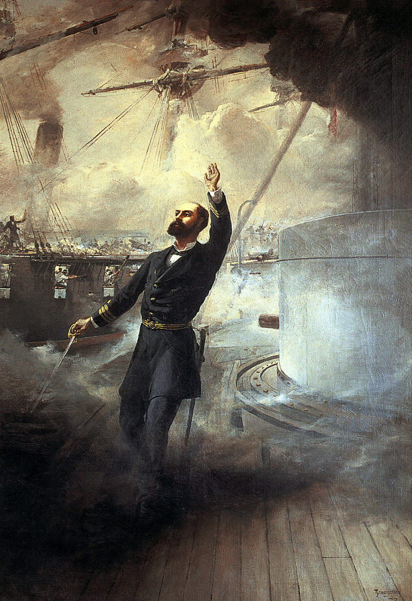

Arturo Prat Chacón
Héroe del Combate Naval de Iquique
¡Muchachos: la contienda es desigual, pero ánimo y valor. Nunca se ha arriado nuestra bandera ante el enemigo y espero que no sea ésta la ocasión de hacerlo!. Arturo Prat

- 1848 - 4 de abril. Arturo Prat nace en Ninhue, VIII región, Chile
- 1858 A la edad de 10 años entra a la Escuela Naval Valparaíso. Conoce allí a sus dos grandes amigos: Luis Uribe y Carlos Condell
- 1865 A la edad de 17 años es ascendido a Teniente 2°
- 1871 Es maestro en la Escuela Noctura para obreros "Benjamín Franklin" de Valparaíso en los ramos de ciencias naturales y moral
- 1871 Se desempeña como profesor en la Escuela Naval en las cátedras de Ordenanza Naval, Cosmografía y Construcción Naval, entre otras
- 1873 Mayo. Contrae matrimonio con Carmela Carvajal Briones Tienen tres hijos: Carmela de Concepción (que fallece a los pocos meses de vida), Blanca Estela y Arturo
- 1875 Julio. Arturo Prat recibe su título de Bachiller en Leyes y un año más tarde su Licenciatura con la Memoria de Prueba, Observaciones a la lei electoral vijente
- 1878 Desempeña cargos diplomáticos en Montevideo y Buenos Aires
- 1878 Es designado Oficial en la Gobernación Marítima de Valparaíso
- 1879 Bajo las órdenes de Juan Williams Rebolledo comanda el ataque chileno en el Combate Naval de Iquique a cargo de la Esmeralda
- 1879 21 de mayo. Arturo Prat muere a la edad de 31 años en el Combate Naval de Iquique
"¡Muchachos: la contienda es desigual...!" comenzaba la arenga que Arturo Prat dirigió a sus hombres antes de lanzarse al abordaje del Huáscar. Esta acción le costó la vida, inmortalizándolo como uno de los héroes más significativos de nuestra historia.